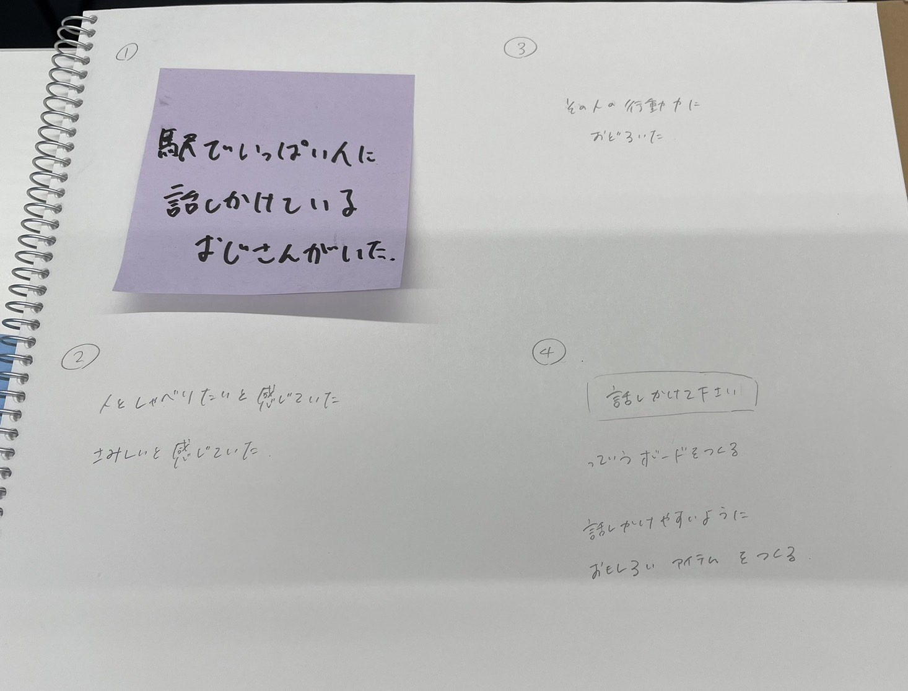
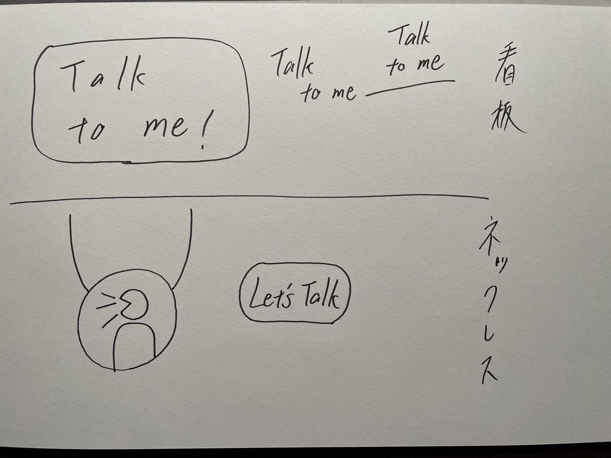
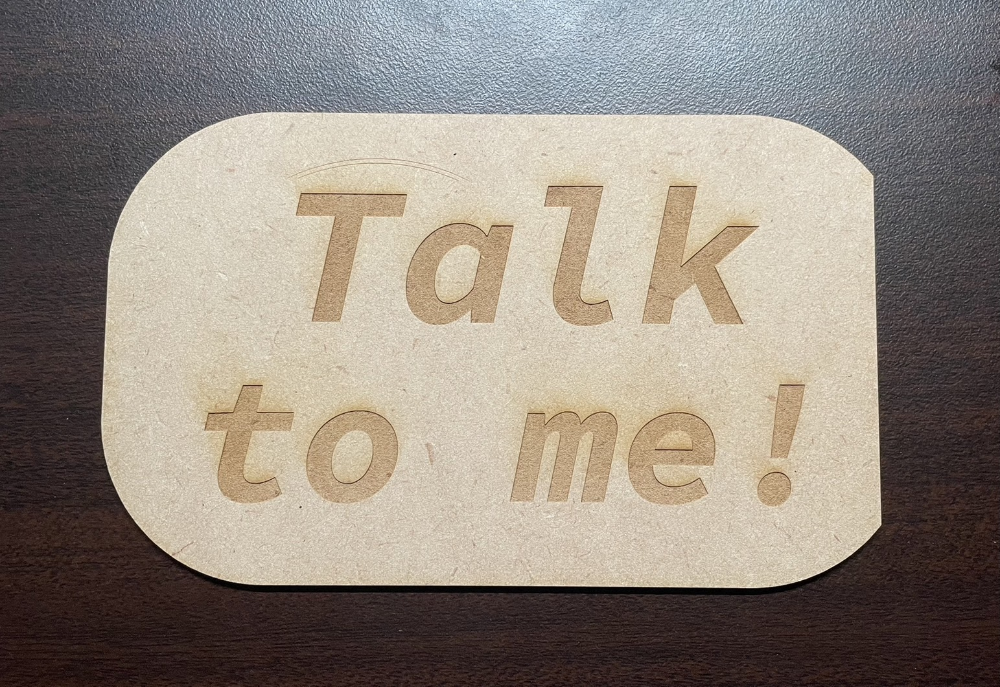
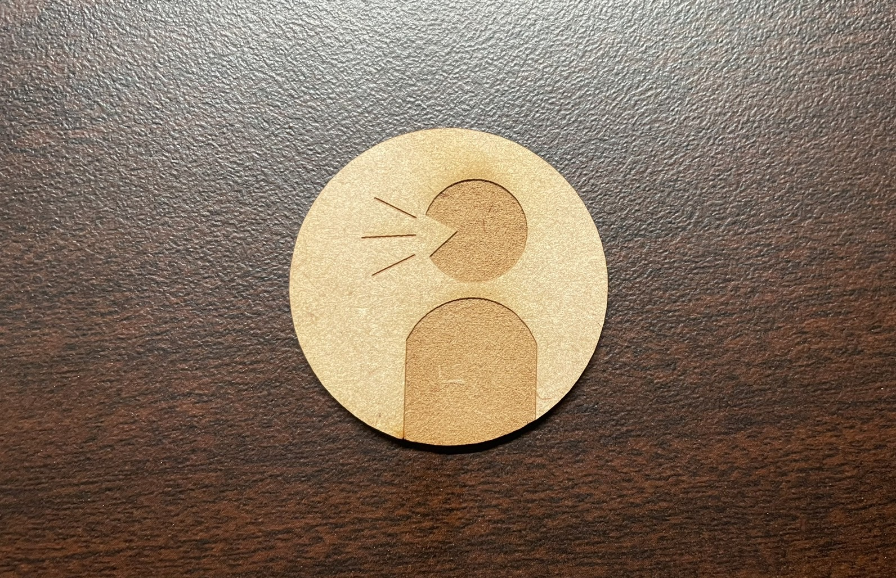
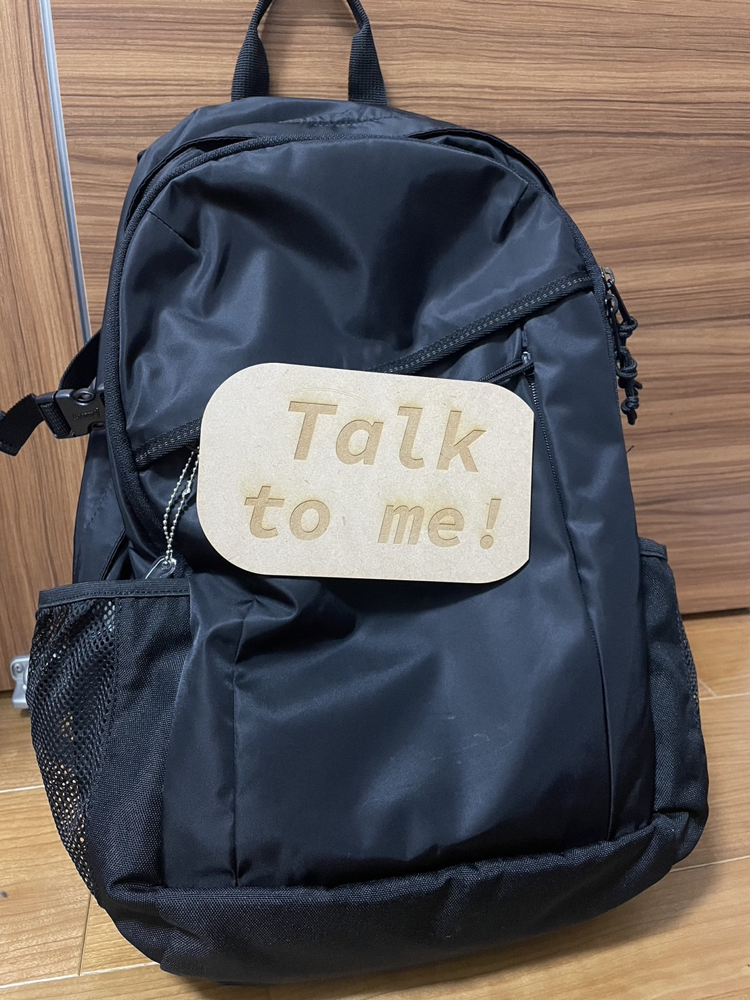
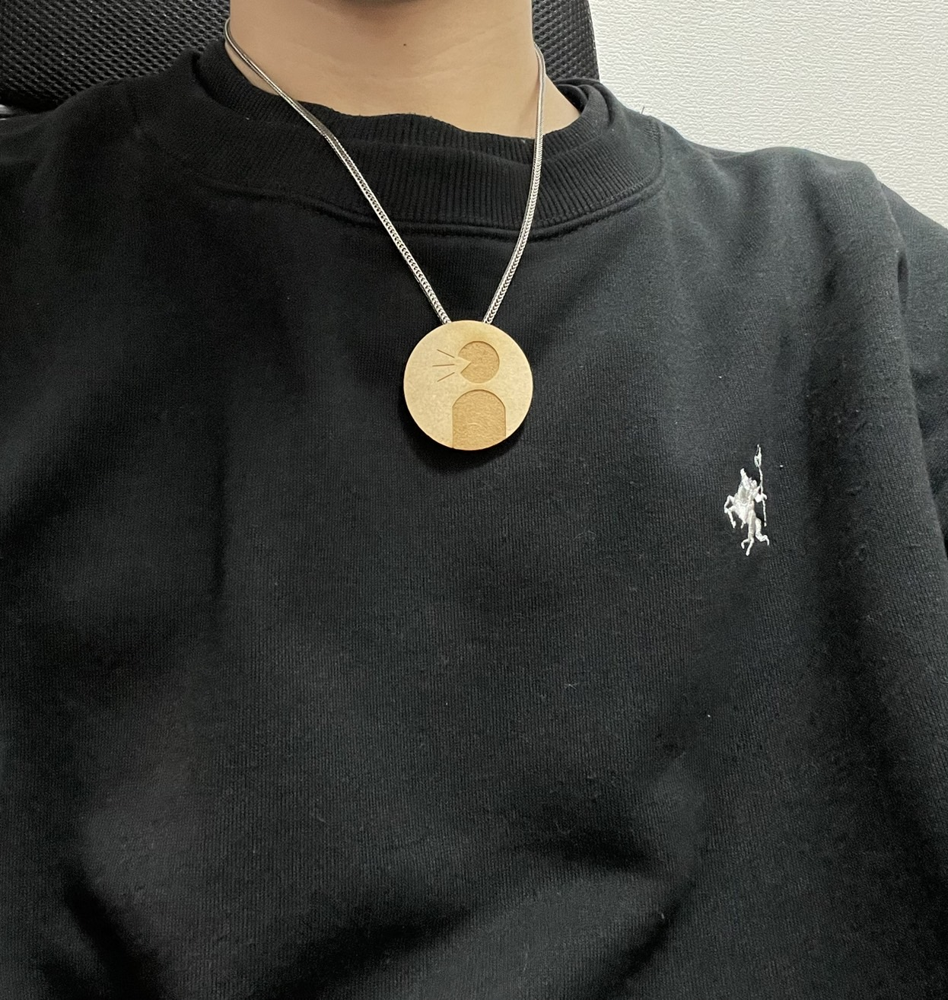

タイトル 【Talk to me!】
・テーマ
駅でいっぱい人に話しかけているおじさんがいました。
しかし、人と話したいおじさんの願いは叶っていない様子で、そのおじさんが話しかけても応じてくれない人ばかりのようでした。
どうすればおじさんの話しかけは成功するのか。逆に、おじさんが他の人に話しかけてもらうことは可能なのか。
私たちの班ではこのことについて考えてみることにしました。
・スケッチ


他の人からぱっと見で「話したいんだな」とわかるようにしたいと思いました。
看板はリュックなどのバッグに付けれるようにできればいいと考えました。
・看板のプリント

レーザー加工のためのデザインをまずはfusionで作成しました。
ですが、彫刻したい文字の部分がイラストレーターの方できれいに塗りつぶしができない問題が起きました。
泣く泣く、イラストレーターで最初から作り直しました。

・ネックレス

こちらも看板と同様に、fusionで下書きを作成しました。
ネックレスはUVプリンターを使ってアクリルで作ろうと考えていましたが、MDFを使ったレーザー加工でも良い雰囲気のものが作れると感じ、今回はレーザー加工で作成しました。
UVプリンターで作っても絶対にきれいになると思ったので、時間を取ってプリントに挑戦してみたいです。

・完成


看板は、写真のように、バッグなんかに付けたりすることで周りの人に「私は人と話したいんだ」や「あの人は話したがっているんだ」と意思表示がわかりやすくなります。
MDFで作っているので、デザイン性もあると思います。
ネックレスにすることで、首元は目の留まりやすい部分なので、自然とマークによる意思表示が目に入りやすいと思います。
アクセサリーとしてのファッション性も期待できるのではないでしょうか。
UVプリンターを使って、アクリル製のものも試したいと感じました。